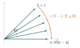

STEP III 1987、第3問
先に進む前に問題を読んでおこう。問題は STEP Support Programme の問題データベースにある： step.maths.org/questions/87-s3-q3
導入
1706 年、ロンドンの数学者ジョン・マチン（John Machin）は、\(\pi\) を小数点以下 \(100\) 桁まで手計算で求めた。それ以前には、これに迫る記録を残した者すらいなかった。その秘密が小問 (ii) の公式である。この公式は、正接（tangent）がごく小さな分数となるような角を用いて \(\frac\pi4\) を表している。分数が小さければ、級数（series）\(\tan^{-1}x = x - \frac{x^3}{3} + \frac{x^5}{5} - \cdots\) は非常に速く収束（converge）する。マチンの公式とその変種は、コンピュータと 第 2.6 節 の方法がそれに取って代わるまで、二世紀半にわたって \(\pi\) を計算する標準的な方法であり続けた。
この公式は三角関数の恒等式（identity）が生んだ奇跡のように見える。しかしこの問題は、それが実は複素数（complex number）の積についての事実であることを示している。すなわち、複素数を掛け合わせると、その偏角（argument）は足し合わされる。整数を成分とする複素数の掛け算をひとつ行うだけで、全体が証明できてしまうのである。
取りかかる前に
\(5 - \mathrm{i}\) の偏角は何か。\(1 + \mathrm{i}\) の偏角はどうか。複素数を掛け合わせると、偏角はどうなるか。
\(\arg(5 - \mathrm{i}) = -\tan^{-1}\frac15\) は小さな負の角であり、\(\arg(1 + \mathrm{i}) = \frac\pi4\) である。複素数を掛け合わせると、絶対値（modulus）は掛け合わされ、偏角は（\(2\pi\) の整数倍の差を除いて）足し合わされる。したがって \[\arg\bigl((5 - \mathrm{i})^4(1 + \mathrm{i})\bigr) = \frac\pi4 - 4\tan^{-1}\frac15 \quad\text{（ただし } 2\pi\text{ の整数倍の差がありうる）}.\] この積を計算し、その偏角を別の方法で求めることができれば、恒等式が得られる。
順を追って解く
段階 1 絶対値の評価
上からの評価については、両辺を2乗してみよ。下からの評価については、\(|x|\cos\alpha + |y|\sin\alpha\) を2つのベクトルの内積とみなしてみよ。
上からの評価：\((|x| + |y|)^2 = x^2 + y^2 + 2|x||y| \geq x^2 + y^2 = |z|^2\) であり、両辺はともに負でないから、\(|z| \leq |x| + |y|\) である。
下からの評価：\(|x|\cos\alpha + |y|\sin\alpha\) は、長さ \(|z|\) のベクトル \((|x|, |y|)\) と単位ベクトル（unit vector）\((\cos\alpha, \sin\alpha)\) との内積（dot product）である。内積は2つのベクトルの長さの積以下であるから、これは \(|z|\) 以下である。（代数的には、\(|z|^2 - (|x|\cos\alpha + |y|\sin\alpha)^2 = (|x|\sin\alpha - |y|\cos\alpha)^2 \geq 0\) である。）■
段階 2 鍵となる掛け算
\((5 - \mathrm{i})^2\) を計算し、それを2乗し、さらに \(1 + \mathrm{i}\) を掛けよ。
\((5 - \mathrm{i})^2 = 25 - 10\mathrm{i} - 1 = 24 - 10\mathrm{i}\) である。次に \((24 - 10\mathrm{i})^2 = 576 - 480\mathrm{i} - 100 = 476 - 480\mathrm{i}\) となる。最後に \[(476 - 480\mathrm{i})(1 + \mathrm{i}) = 476 + 476\mathrm{i} - 480\mathrm{i} + 480 = 956 - 4\mathrm{i}.\]
ここで偏角を比べよ。\(956 - 4\mathrm{i}\) の偏角は何か。余分な \(2\pi\) の整数倍が現れないと確信できるのはなぜか。
\(956 - 4\mathrm{i} = 4(239 - \mathrm{i})\) であり、その偏角は \(-\tan^{-1}\frac{1}{239}\) である。よって、ある整数 \(k\) に対して \[\frac\pi4 - 4\tan^{-1}\frac15 = -\tan^{-1}\frac{1}{239} + 2k\pi\] が成り立つ。ところが \(0 < \tan^{-1}\frac15 < \frac15\) であるから、左辺は \(\frac\pi4 - \frac45\) と \(\frac\pi4\) の間、すなわちおよそ \(-0.02\) と \(0.79\) の間にある。一方、右辺から \(2k\pi\) を除いたものは \(-0.005\) と \(0\) の間にある。\(2\pi\) はこの差よりはるかに大きいから、\(k = 0\) である。整理すると \[\frac\pi4 = 4\tan^{-1}\frac15 - \tan^{-1}\frac{1}{239}. \qed\] 図 5.1.1 は、何が起きたかを示している。\(45^\circ\) から出発して、\(5 - \mathrm{i}\) を掛けるたびに時計回りにおよそ \(11.3^\circ\) 回転し、4回掛けたあとには実軸（real axis）をわずか \(0.24^\circ\) だけ通り越している。

段階 3 2つ目の公式
同様に考えると、今度はどのような積を計算すればよいか。
\((4 + \mathrm{i})^3(20 + \mathrm{i})(1985 + \mathrm{i})\) を考える。その偏角は \(3\tan^{-1}\frac14 + \tan^{-1}\frac{1}{20} + \tan^{-1}\frac{1}{1985}\) である。さて \((4 + \mathrm{i})^2 = 15 + 8\mathrm{i}\) であるから、\((4 + \mathrm{i})^3 = (15 + 8\mathrm{i})(4 + \mathrm{i}) = 52 + 47\mathrm{i}\) となる。次に \((52 + 47\mathrm{i})(20 + \mathrm{i}) = 1040 + 52\mathrm{i} + 940\mathrm{i} - 47 = 993 + 992\mathrm{i}\) であり、 \[(993 + 992\mathrm{i})(1985 + \mathrm{i}) = (1971105 - 992) + (993 + 1969120)\mathrm{i} = 1970113 + 1970113\mathrm{i}.\] 実部（real part）と虚部（imaginary part）が等しいから、偏角は \(\frac\pi4\) である。3つの角はいずれも小さな正の角であり（その和は \(3 \cdot \frac14 + \frac1{20} + \frac{1}{1985} < 1 < 2\pi\) より小さい）、\(2\pi\) の整数倍を気にする必要はない。よって公式が従う。■
振り返り
掛け算で偏角は足し合わされる。このただひとつの事実によって、ガウス整数の積が角どうしの恒等式に変わった。
\(2\pi\) の整数倍に注意する。偏角は \(2\pi\) の整数倍の差を除いてしか定まらないので、どの恒等式でも、その整数倍を確定させるために大きさの評価が必要であった。
整数が仕事をする。計算はすべて整数で行われ、\(\pi\) についての恒等式は近似を一切用いずに厳密に得られた。
背後にある数学
マチンの公式はなぜ計算にこれほど適しているのだろうか。級数 \(\tan^{-1}x = x - \frac{x^3}{3} + \frac{x^5}{5} - \cdots\) は \(|x| \leq 1\) で収束するが、\(x = 1\) では収束が非常に遅い。\(\frac\pi4\) を小数点以下3桁求めるだけでも、\(1 - \frac13 + \frac15 - \cdots\) をおよそ1000項とる必要がある。\(x = \frac15\) とすると、各項は前の項のおよそ \(25\) 分の \(1\) になり、1項あたりおよそ \(1.4\) 桁ずつ精度が上がる。\(x = \frac{1}{239}\) なら、1項あたりおよそ \(4.8\) 桁である。マチンの \(100\) 桁は、1つ目の級数をわずか約 \(70\) 項、2つ目の級数を約 \(20\) 項とるだけで得られた。1873 年、William Shanks はマチン型の公式を用いて \(707\) 桁を計算し、その計算に何年も費やした。ところが 1944 年に、彼が小数第 \(528\) 位で誤りを犯しており、それ以降の桁がすべて間違っていたことが判明した。
再びガウス整数
\(a\), \(b\) を整数として \(a + b\mathrm{i}\) の形に表される数は、第 1.6 節 で扱ったガウス整数（Gaussian integers）である。\(5 - \mathrm{i}\) がこれほどうまく働く理由は、ある因数分解（factorisation）にある。\(239^2 + 1 = 57122 = 2 \times 13^4\) であり、これをガウス整数の中で書くと \((239 + \mathrm{i})(239 - \mathrm{i}) = (1 + \mathrm{i})(1 - \mathrm{i})\,(3 + 2\mathrm{i})^4(3 - 2\mathrm{i})^4\) となる。そして \(5 - \mathrm{i} = (1 - \mathrm{i})(3 + 2\mathrm{i})\) は、これと同じガウス素数（Gaussian primes）からできている。マチン型の公式を見つけることは、実は \(n^2 + 1\) の形の数を因数分解する問題なのである。1899 年、Carl Størmer はまさにこの考え方を用いて、\(a\), \(b\), \(m\), \(n\) を整数とする \(\frac\pi4 = a\tan^{-1}\frac1m + b\tan^{-1}\frac1n\) の形の公式は4つしかないことを証明した。それはマチンの公式と、オイラー（Euler）、Hermann、Hutton がそれぞれ見つけた3つの公式である。
回転
絶対値 \(1\) の複素数を掛けることは、平面の回転（rotation）である。だからこそ複素数は、この章の後半で扱う幾何学から、電気工学における交流、量子力学の波動関数に至るまで、回転や角度が関わるあらゆるものにとって自然な言語となっている。第 4.2 節 では \(\tan^{-1}\) の加法定理（addition formula）が巧妙な置換から得られたが、ここでは複素数の掛け算から得られる。この2つは、同じ事実を異なる側面から見たものである。
思考のスキル
角の和についての恒等式は、積の偏角についての恒等式である。積を厳密に計算し、その偏角を読み取れ。
複素数の計算は機械的かつ厳密に行えるが、逆三角関数（inverse trigonometric functions）の式変形は誤りを犯しやすい。一方から他方へ翻訳することが、しばしば証明への最短の道となる。
次の一歩
いとこにあたる問題。STEP II 2000、第4問 に挑戦してみよ。この節と同じ方法、すなわち複素数を掛け合わせて偏角を読み取る方法で、\(\frac\pi4\) についての別の逆正接の公式を証明する問題である。
オイラーの公式。\((2 + \mathrm{i})(3 + \mathrm{i})\) を考えることにより、\(\tan^{-1}\frac12 + \tan^{-1}\frac13 = \frac\pi4\) を示せ。
Hutton の公式。\(\frac\pi4 = 2\tan^{-1}\frac13 + \tan^{-1}\frac17\) を示せ。
何項必要か。マチンの公式を用いて \(\pi\) を小数点以下 \(20\) 桁まで求めるには、それぞれの級数を何項とる必要があるか見積もれ。そのうえで、最初の数桁を電卓で実際に計算してみよ。
さらに学ぶために
Jonathan Borwein & Peter Borwein, Pi and the AGM（Wiley）。マチン型の公式の歴史も扱っている。
Jörg Arndt & Christoph Haenel, Pi Unleashed（Springer）。\(\pi\) を計算する新旧の方法を生き生きと紹介している。
Tristan Needham, Visual Complex Analysis（Oxford University Press）。複素数を幾何学的に捉えるための最良の本である。第 1 章では、掛け算を回転と拡大として扱っている。